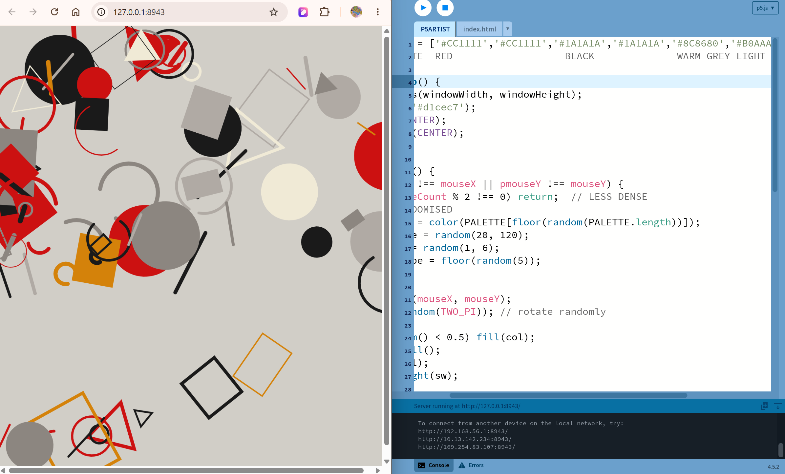

In this activity I tried to recreate a constructivist style with p5's draw function, taking my own twist on the previous week's activity
Taking inspiration from El Lissitzky's drawings, I attempted to replicate the bold and dynamic nature of his works. I used an array to store his color palette - predominately red, cream, grey, black and a bit of yellow.
I then used shapes such as circles and rectangles, randomising their shape and color, alternating between lines vs. filled shpaes. I consulted Claude AI on how to write the function that determines the randomised outcomes - the logic is that a random number between 0-5 is generated, then floored to a whole number. Every number is then mapped to an outcome in the if-else block. The fill vs. no fill function follows a similar logic.
